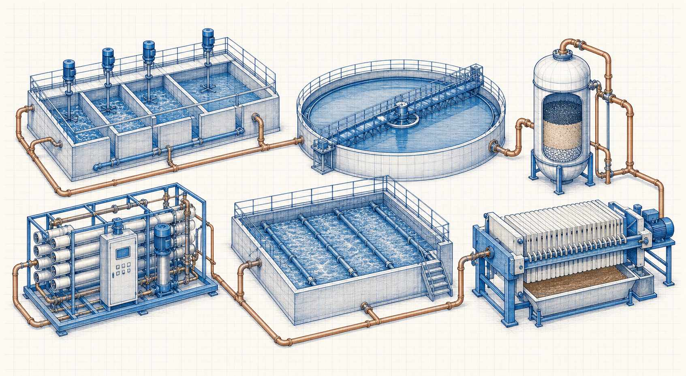

Raw Water Treatment
Clarification and filtration, including coagulation, flocculation, settling and filtration stages.
Process category IndustrialCalculation HubSearch topics, tools, articles...
IndustrialCalculation HubSearch topics, tools, articles...Level 2 process family
Follow water-treatment stages from clarification and filtration to membrane treatment, industrial effluent treatment and sewage treatment.

Explore by process
Clarification and filtration, including coagulation, flocculation, settling and filtration stages.
Process categoryMembrane treatment, RO stages and regeneration processes for demineralized water.
Process categoryIndustrial effluent treatment using biological and physico-chemical treatment processes.
Process categoryPrimary, secondary and tertiary sewage treatment process flow.
Process category